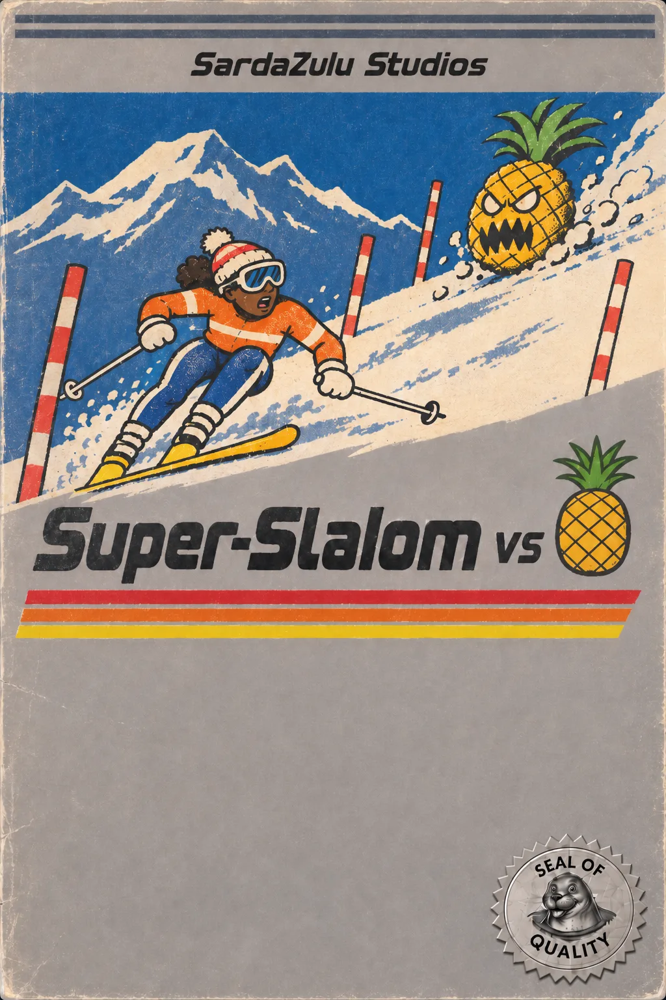
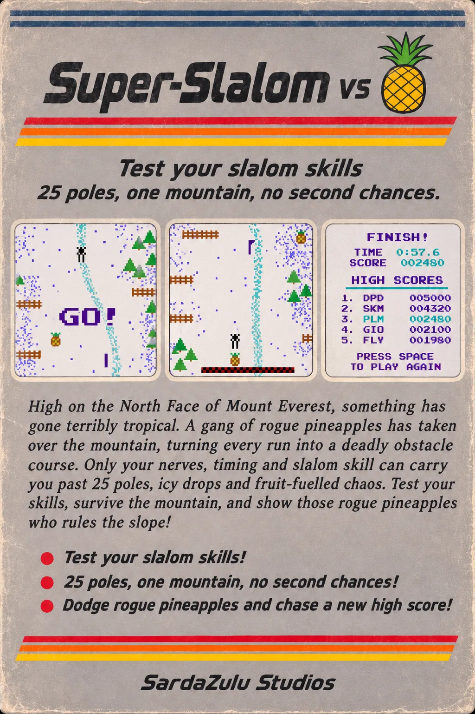

LEFT / RIGHT: MODE · UP / DOWN (W / S): COURSE · SPACE STARTS
HOLD A / L, THE SHIFTS OR THE ARROWS TO TURN
SPACE PAUSES · R RESTARTS · M MUTES
ARROWS TO CHOOSE · TAP TO START
HOLD THE ARROWS TO TURN
TAP THE SCREEN TO PAUSE